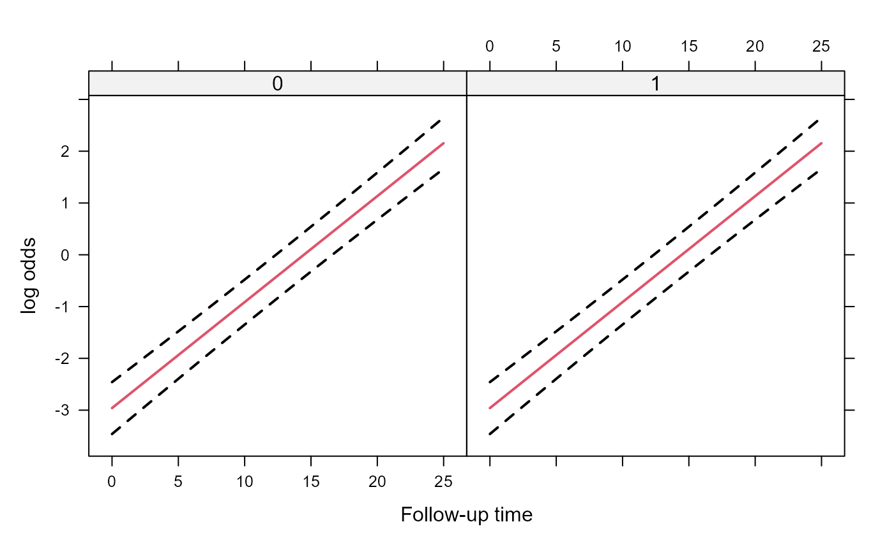
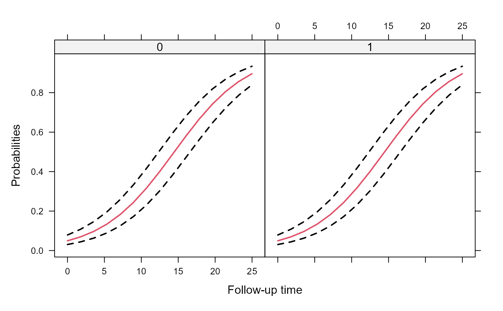
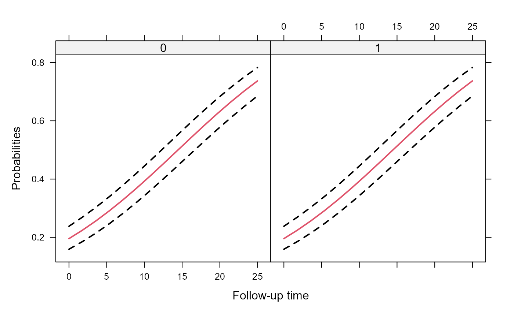

mixed_model.RdFits generalized linear mixed effects models under maximum likelihood using adaptive Gaussian quadrature.
mixed_model(fixed, random, data, family, na.action = na.exclude, zi_fixed = NULL, zi_random = NULL, penalized = FALSE, n_phis = NULL, initial_values = NULL, control = list(), …)
| fixed | a formula for the fixed-effects part of the model, including the outcome. |
|---|---|
| random | a formula for the random-effects part of the model. This should only contain
the right-hand side part, e.g., |
| data | a data.frame containing the variables required in |
| family | a |
| na.action | what to do with missing values in |
| zi_fixed, zi_random | formulas for the fixed and random effects of the zero inflated part. |
| penalized | logical or a list. If logical and equal to |
| n_phis | a numeric scalar; in case the family corresponds to a distribution that has extra (dispersion/shape) parameters, you need to specify how many extra parameters are needed. |
| initial_values | a list of initial values. This can have up to three components, namely,
|
| control | a list with the following components:
|
| … | arguments passed to |
General: The mixed_model() function fits mixed effects models in which the
integrals over the random effects in the definition of the marginal log-likelihood cannot
be solved analytically and need to be approximated. The function works under the
assumption of normally distributed random effects with mean zero and variance-covariance
matrix \(D\). These integrals are approximated numerically using an adaptive
Gauss-Hermite quadrature rule. Using the control argument nAGQ, the user can
specify the number of quadrature points used in the approximation.
User-defined family: The user can define its own family object; for an example,
see the help page of negative.binomial.
Optimization: A hybrid approach is used, starting with iter_EM iterations
and unless convergence was achieved it continuous with a direct optimization of the
log-likelihood using function optim and the algorithm specified by
optim_method. For stability and speed, the derivative of the log-likelihood with
respect to the parameters are internally programmed.
An object of class "MixMod" with components:
a numeric vector with the estimated fixed effects.
a numeric vector with the estimated extra parameters.
a numeric matrix denoting the estimated covariance matrix of the random effects.
a numeric matrix with the empirical Bayes estimates of the random effects.
a list of numeric matrices with the posterior variances of the random effects.
a numeric scalar denoting the log-likelihood value at the end of the optimization procedure.
a numeric matrix denoting the Hessian matrix at the end of the optimization procedure.
a logical indicating whether convergence was attained.
a copy of the grouping variable from data.
a character string with the name of the grouping variable.
a list with two terms components, termsX derived from the fixed
argument, and termsZ derived from the random argument.
a list with two model.frame components, mfX derived from the
fixed argument, and mfZ derived from the random argument.
a copy of the (user-specific) control argument.
a list of functions used in the optimization procedure.
a copy of the family argument.
the matched call.
# simulate some data set.seed(123L) n <- 500 K <- 15 t.max <- 25 betas <- c(-2.13, -0.25, 0.24, -0.05) D <- matrix(0, 2, 2) D[1:2, 1:2] <- c(0.48, -0.08, -0.08, 0.18) times <- c(replicate(n, c(0, sort(runif(K-1, 0, t.max))))) group <- sample(rep(0:1, each = n/2)) DF <- data.frame(year = times, group = factor(rep(group, each = K))) X <- model.matrix(~ group * year, data = DF) Z <- model.matrix(~ year, data = DF) b <- cbind(rnorm(n, sd = sqrt(D[1, 1])), rnorm(n, sd = sqrt(D[2, 2]))) id <- rep(1:n, each = K) eta.y <- as.vector(X %*% betas + rowSums(Z * b[id, ])) DF$y <- rbinom(n * K, 1, plogis(eta.y)) DF$id <- factor(id) ################################################ fm1 <- mixed_model(fixed = y ~ year * group, random = ~ 1 | id, data = DF, family = binomial()) # fixed effects fixef(fm1)#> (Intercept) year group1 year:group1 #> -2.88907871 0.19374986 -0.53597641 0.00989955#> (Intercept) #> 1 1.044125 #> 2 2.026647 #> 3 2.230191 #> 4 2.226230 #> 5 1.739762 #> 6 2.111285# detailed output summary(fm1)#> #> Call: #> mixed_model(fixed = y ~ year * group, random = ~1 | id, data = DF, #> family = binomial()) #> #> Data Descriptives: #> Number of Observations: 7500 #> Number of Groups: 500 #> #> Model: #> family: binomial #> link: logit #> #> Fit statistics: #> log.Lik AIC BIC #> -2970.592 5951.184 5972.257 #> #> Random effects covariance matrix: #> StdDev #> (Intercept) 3.096228 #> #> Fixed effects: #> Value Std.Err z-value p-value #> (Intercept) -2.8891 0.2358 -12.2523 < 1e-04 #> year 0.1937 0.0090 21.5377 < 1e-04 #> group1 -0.5360 0.3294 -1.6272 0.10369 #> year:group1 0.0099 0.0125 0.7916 0.42857 #> #> Integration: #> method: adaptive Gauss-Hermite quadrature rule #> quadrature points: 11 #> #> Optimization: #> method: hybrid EM and quasi-Newton #> converged: TRUE# fitted values for the 'mean subject', i.e., with # random effects values equal to 0 head(fitted(fm1, type = "mean_subject"))#> 1 2 3 4 5 6 #> 0.03152154 0.03942559 0.12336640 0.20704055 0.24656366 0.24967954# fitted values for the conditioning on the estimated random effects head(fitted(fm1, type = "subject_specific"))#> 1 2 3 4 5 6 #> 0.08463845 0.10442549 0.28560921 0.42586730 0.48178316 0.48595434##############fm2 <- mixed_model(fixed = y ~ year, random = ~ 1 | id, data = DF, family = binomial()) # likelihood ratio test between the two models anova(fm2, fm1)#> #> AIC BIC log.Lik LRT df p.value #> fm2 5949.84 5962.48 -2971.92 #> fm1 5951.18 5951.18 -2970.59 2.65 2 0.2656 #>#> #> Marginal Wald Tests Table #> #> User-defined contrasts matrix: #> (Intr) year group1 yr:gr1 #> 0 0 1 0 #> 0 0 0 1 #> #> Chisq df Pr(>|Chi|) #> 2.6498 2 0.2658 #>############## # An effects plot for the mean subject (i.e., with random effects equal to 0) nDF <- with(DF, expand.grid(year = seq(min(year), max(year), length.out = 15), group = levels(group))) plot_data <- effectPlotData(fm2, nDF) require("lattice") xyplot(pred + low + upp ~ year | group, data = plot_data, type = "l", lty = c(1, 2, 2), col = c(2, 1, 1), lwd = 2, xlab = "Follow-up time", ylab = "log odds")expit <- function (x) exp(x) / (1 + exp(x)) xyplot(expit(pred) + expit(low) + expit(upp) ~ year | group, data = plot_data, type = "l", lty = c(1, 2, 2), col = c(2, 1, 1), lwd = 2, xlab = "Follow-up time", ylab = "Probabilities")# An effects plots for the marginal probabilities plot_data_m <- effectPlotData(fm2, nDF, marginal = TRUE) expit <- function (x) exp(x) / (1 + exp(x)) xyplot(expit(pred) + expit(low) + expit(upp) ~ year | group, data = plot_data_m, type = "l", lty = c(1, 2, 2), col = c(2, 1, 1), lwd = 2, xlab = "Follow-up time", ylab = "Probabilities")############## # include random slopes fm1_slp <- update(fm1, random = ~ year | id) # increase the number of quadrature points to 15 fm1_slp_q15 <- update(fm1_slp, nAGQ = 15) # a diagonal covariance matrix for the random effects fm1_slp_diag <- update(fm1, random = ~ year || id) anova(fm1_slp_diag, fm1_slp)#> #> AIC BIC log.Lik LRT df p.value #> fm1_slp_diag 5010.44 5035.73 -2499.22 #> fm1_slp 5012.37 5012.37 -2499.19 0.07 1 0.7893 #>